Jing-Zhang Civic AI Loop
A formal, machine-auditable urban-design proposal using provisional geometry, explicit recalculation triggers, public evidence and human review gates.
Jing-Zhang Civic AI Loop
Design Basis and Source Inventory
This formal proposal responds to the official open-call announcement, the agent taskbook and the current public site package. The announcement, registered public sources, provisional geometry, enumerations, ranges, standards and schemas are treated as separate authorities. Design statements are therefore expressed as traceable claims, recomputable metrics, reviewable spatial layers or explicit assumptions. Narrative prose does not replace GeoJSON, matrices, A3 booklets, A0 boards or offline HTML. Source Source Depth
The public source registry governs whether a record is suitable for formal claims, background only or provisional use. Background-only material is never promoted into an official boundary, statutory control or implementation commitment. The processed fact pack is a navigation layer rather than a new authority; the structured relationship between claims and sources remains in sources.json. Source Source
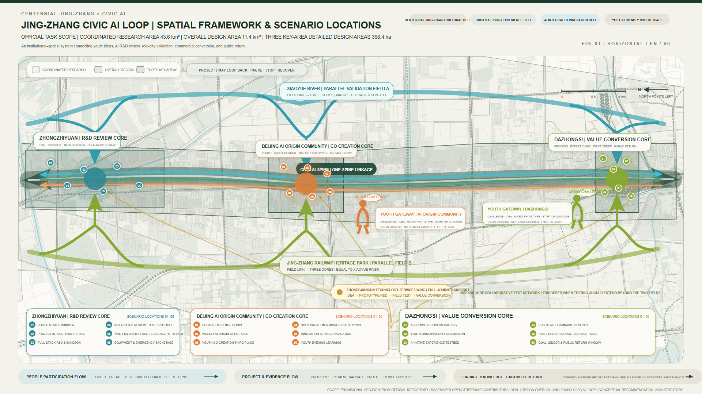
The organizer has not yet supplied trusted official SITE_BOUNDARY and KEY_AREA polygons. This package therefore retains the repository's explicitly provisional constraints. They support design discussion, machine validation and provisional metric recomputation, but they are not official planning boundaries, approval evidence or precise statutory controls. When official geometry becomes available, all dependent land-use, road, green-space, public-space, building, phasing and metric files must be recalculated. Spatial data Metric
Three-Level Scope Framework
The proposal works at three linked scales. The 43.6 km² Coordinated Research Area addresses the AI ecosystem, strategic positioning, innovation chains and future-city form. The 11.4 km² Overall Design Area translates these strategies into an urban-renewal framework, industrial-space structure, mobility and municipal support, public space and urban character. The three Key-Area Detailed Design Areas test functions, building interfaces, renewal actions, public-space continuity and operations at a finer scale. Depth Standard
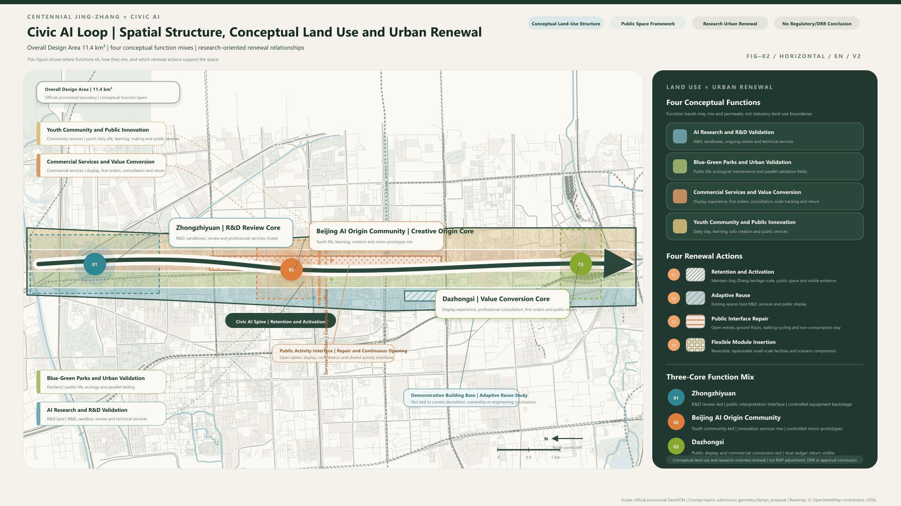
The scales are not separate drawing packages. Strategic research determines the innovation and service network; overall design locates spatial and renewal actions; key-area design tests whether these actions can be entered, operated, reviewed, paused and stopped. Every quantity in the proposal is either recomputable from the submitted geometry or identified as pending official or professional input. Depth Spatial data
The proposed organizing idea is one civic AI loop supported by one spine, three differentiated cores, two service wings, two equal gateways, two parallel validation fields, one service network and three feedback flows. The structure links youth ideas, R&D review, real-city validation, value conversion and public return without inventing a new statutory boundary.
Industry and Future-City Strategy for the Coordinated Research Area
The strategic layer connects universities and research institutes, open-source communities, enterprises, professional services, public experience and international communication. The brand system distinguishes the overall Jing-Zhang identity, cultural wayfinding, key-area roles and event brands. It supports the official Three Zones and Two Wings structure and the five required functions without treating branding as a substitute for implementation. Source Standard
The Civic AI Loop gives each project a persistent passport. Ideas may enter through either youth gateway; Zhongzhiyuan provides tiered R&D, safety and evidence review; Xiaoyue River and the Jing-Zhang Railway Heritage Park act as equal, task-matched validation fields; Dazhongsi makes capability-to-value conversion and public return visible. The Zhongguancun Technology Services Wing provides continuous professional support. These are conceptual recommendations for professional deepening, not confirmed government programs. Standard Spatial data
Urban Renewal and Regulatory-Plan-Depth Urban Design for the Overall Design Area
The Overall Design Area uses one geometry snapshot to coordinate conceptual land use, building footprints, walking and cycling, blue-green space, public space and phasing. Four mixed functional families support AI R&D and validation, blue-green urban testing, commercial service and value conversion, and youth community/public innovation. They may overlap in operation and must not be read as statutory land-use boundaries. Standard Spatial data
Four research-oriented renewal actions translate the strategy into spatial work: retain and activate, adaptively reuse, repair public interfaces and insert reversible modules. Each action begins with building-by-building, ownership, fire-safety, heritage and operating review. No parcel-level demolition, engineering alignment, development-intensity or approval conclusion is inferred. Depth Depth
Detailed Design for the Three Key Areas
Zhongzhiyuan is proposed as an R&D review and validation core connected to the Xiaoyue River public realm. It combines tiered risk review, model and interaction sandboxes, test protocols, evidence return, equipment logistics and a legible public interface. Beijing AI Origin Community is an equal-entry co-creation core where individuals can formulate questions, create micro-prototypes, request professional support and publish in small, reversible steps. Dazhongsi is a value-conversion and public-return core that makes growth, trial, first-order responsibility, professional support, dual-account return and scaling decisions visible. Depth
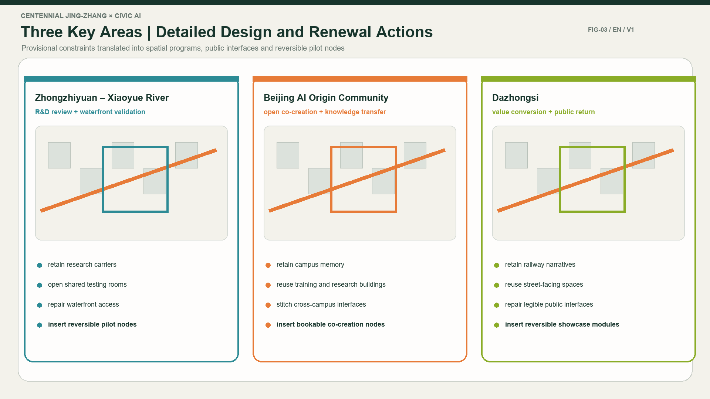
All three areas remain within provisional constraints. Their detailed designs identify functions, public and protected interfaces, walking links, operational gates and professional follow-ups, but do not claim official property boundaries, approved building scales, demolition decisions or engineering feasibility. Spatial data Spatial data Spatial data
AI Innovation Ecosystem, Personas and AI-Enabled Scenarios
The operating model serves at least five user groups: open-source developers, start-up teams, university students and researchers, nearby residents, and enterprise or international visitors. Every scenario states its user, location, required data, public value, risk boundary, human-review point and operating responsibility. Public-space scenarios link to the public-space layer; walking and cycling scenarios link to roads; open-space scenarios link to green space and the core visual ratios. Spatial data Metric Metric
Ten primary scenarios cover an open-source release hall, safety-governance sandbox, edge-compute service point, explainable walking guidance, Dazhongsi international presentation room, Qinghe low-carbon innovation corridor, university-adjacent transfer street, data-governance salon, AI-enabled neighborhood services and a global AI activity route. The expanded drawing set also shows six recurring operating states: daily opening, learning teams, youth release, public trial, first-order event and night tracking.
Urban agents may help identify walking gaps, maintenance needs, public-space patterns, service demand and event risks, but they do not replace planning approval or human professional judgment. Personal behavioral tracking, unauthorized research data and opaque automated decisions are excluded.
Land Use, Building Scale and Demolish-Renovate-Retain Strategy
The land-use proposal uses the registered national classification reference and a topologically closed design partition. Building work distinguishes retained, adaptively reused, interface-repaired, newly inserted or still-unknown conditions. The design layer does not invent ownership, structural capacity, fire-safety status, heritage controls or exact building heights. Standard Spatial data
Building-footprint area is recomputable from geometry. FAR, building height, building coverage, setbacks and other official controls remain unknown until authoritative planning and engineering conditions are available. The functional-area bubble study is a capacity and adjacency discussion only; it is explicitly non-scaled and must not be read as an architectural footprint or approved planning indicator. Metric Depth
Transport, Rail, Municipal and Public-Service Facilities
The mobility framework prioritizes existing road-aligned walking and cycling connections, rail-station access, barrier-free continuity and local repair of discontinuities. The main north-south route and recommended east-west links are conceptual filters: cross-sections, crossings, ownership, traffic safety and accessibility require professional verification. Depth Spatial data
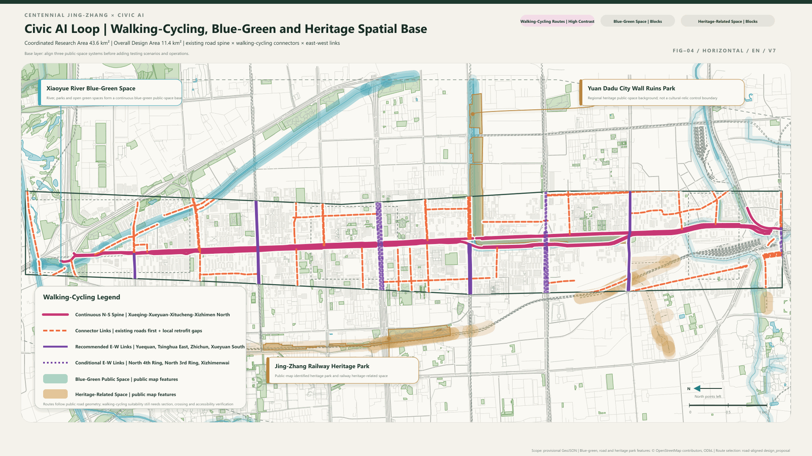
Municipal and public-service recommendations include innovation services, talent support, edge computing, distributed energy interfaces, equipment logistics and traditional municipal coordination. Pipeline capacity, drainage, flood control, fire access, power and compute loads are formal follow-up inputs rather than agent-generated conclusions. Depth Spatial data
Blue-Green Space, Public Space and Urban Character
Xiaoyue River, the Jing-Zhang Railway Heritage Park and the surrounding open-space network form two equal, task-matched validation environments. Ordinary public use remains the baseline. Every pilot must disclose its boundary, time, data, equipment, human handoff and stop condition; tests cannot displace ordinary access or treat heritage space as a technology showroom. Depth Spatial data
The urban-character system combines railway history, Zhongguancun innovation culture and emerging AI culture. Its visual language is light, clean, transparent, green and adaptable. Materials are durable, reversible and maintainable; status is expressed by shape, text and color together. The three landmark roles - Co-Intelligence Origin, Validation Lighthouse and Return Common - are public commitments to make ideas, evidence and value return legible, not three sculptural objects or claims of official approval. Standard
Renewal Project List, Policy and Phasing
The implementation framework identifies six project families: walking-link repair in the heritage corridor, the Zhongzhiyuan-Qinghe innovation interface, the AI Origin university-adjacent transfer street, Dazhongsi station-area public connections, public AI and edge-compute nodes, and a global AI activity route. Each requires a responsible organization, enabling conditions, risk register, stop gate and evaluation metric. Depth Spatial data
Near-term work uses reversible public-space components, open service desks and controlled validation protocols. Medium-term work addresses adaptive reuse, continuous interfaces and professional infrastructure. Long-term work depends on official planning, ownership, municipal, heritage and investment decisions. The 100-day design call is not confused with urban-renewal implementation phasing. Depth
Metrics, Area Recalculation and Compliance Matrices
The three core visual metrics are known and recomputable from the submitted provisional design geometry: site area 11,412,825.386 m², green ratio 0.123423, and public-space ratio 0.073281. Their formulas, source files, confidence and assumptions are maintained in metrics.json and repeated as machine-readable values in the offline visual. Metric Spatial data
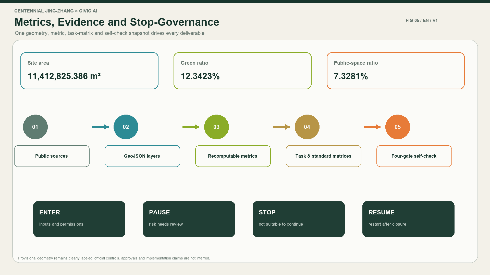
The compliance matrix maps every required announcement and agent-taskbook item to a report section, spatial layer, metric, figure, standard, assumption and review record. The standard matrix covers mandatory professional references; the design-depth matrix covers every required formal depth item. Unknown official controls remain conditional follow-ups rather than fabricated precision. Depth
Risk, Rights and Compliance
The package contains complete Chinese and English counterparts for the proposal, rendered report, offline visual, A3 booklet, A0 boards and every declared text-bearing figure. The HTML is fully offline and contains no remote scripts, fonts, map tiles, APIs, forms, iframes or tracking. Public data, generated diagrams, fonts and production methods are recorded in sources.json and report/copyright_statement.md. Depth Source
The proposal does not claim official approval, statutory planning status, final ownership, confirmed investment, guaranteed implementation or engineering feasibility. Provisional geometry, missing controls and professional follow-ups remain visible. High-impact, privacy-sensitive, safety-related or financially consequential actions require human review and may be paused, stopped, revised or withdrawn.
References
brief/public-brief.mdbrief/site-package/design_brief.jsonbrief/site-package/allowed_design_space.jsonbrief/site-package/agent_taskbook.jsonbrief/site-package/standards/standards.jsondata/source_registry.jsondata/processed/agent_fact_pack.md- Complete machine indexes:
sources.json,metrics.json,compliance_matrix.json,standard_matrix.jsonanddesign_depth_matrix.jsonSource
Supplemental Spatial Prototypes and Operating Drawings
The following drawings are part of the formal text-and-drawing package. Their Chinese originals and English counterparts carry the same status: conceptual, non-statutory and subject to geometry or professional deepening where noted.
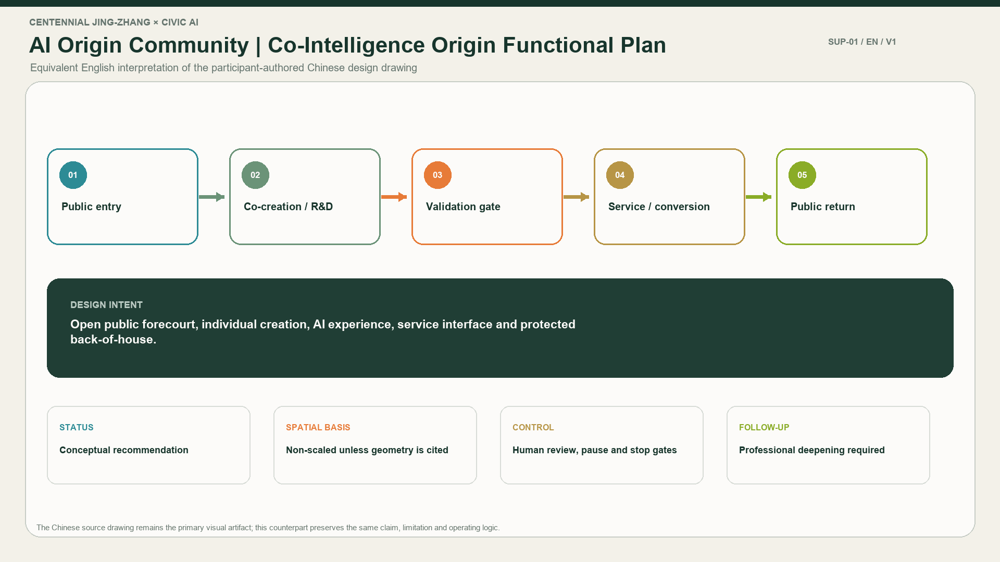
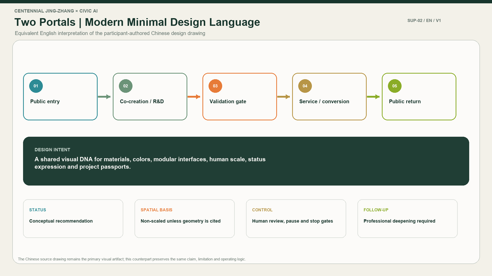
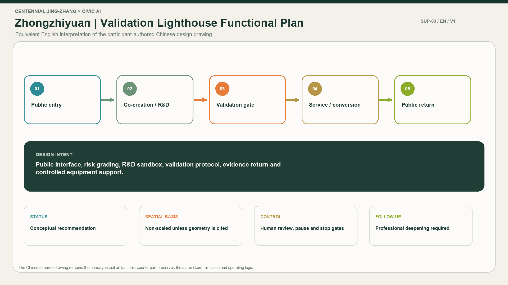
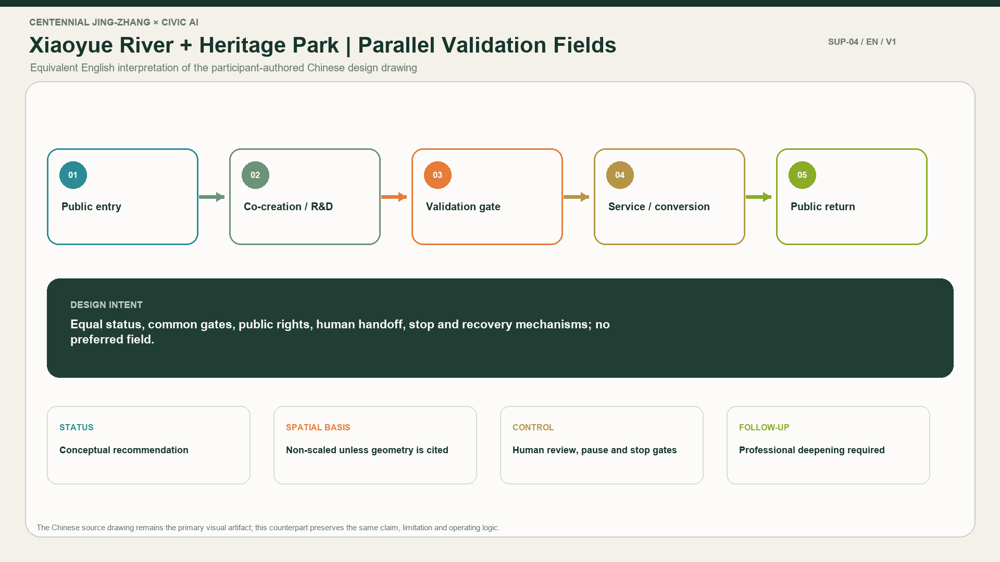
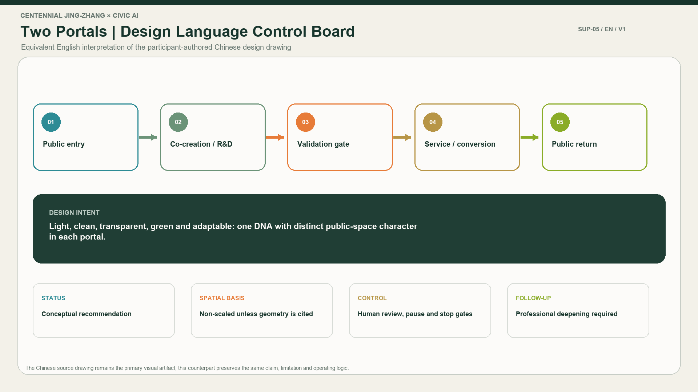
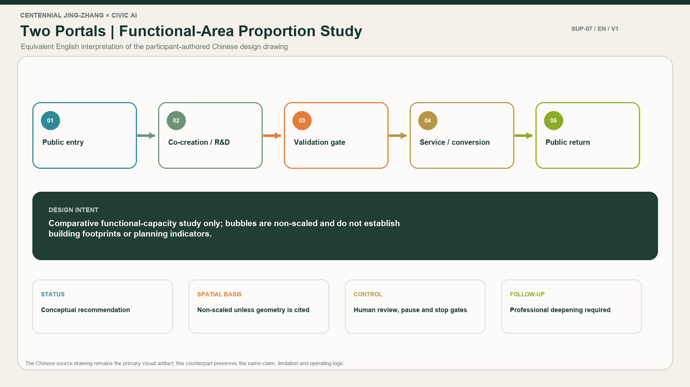
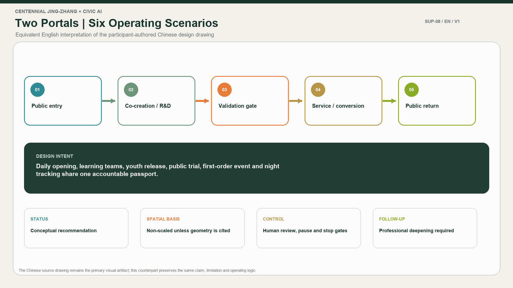
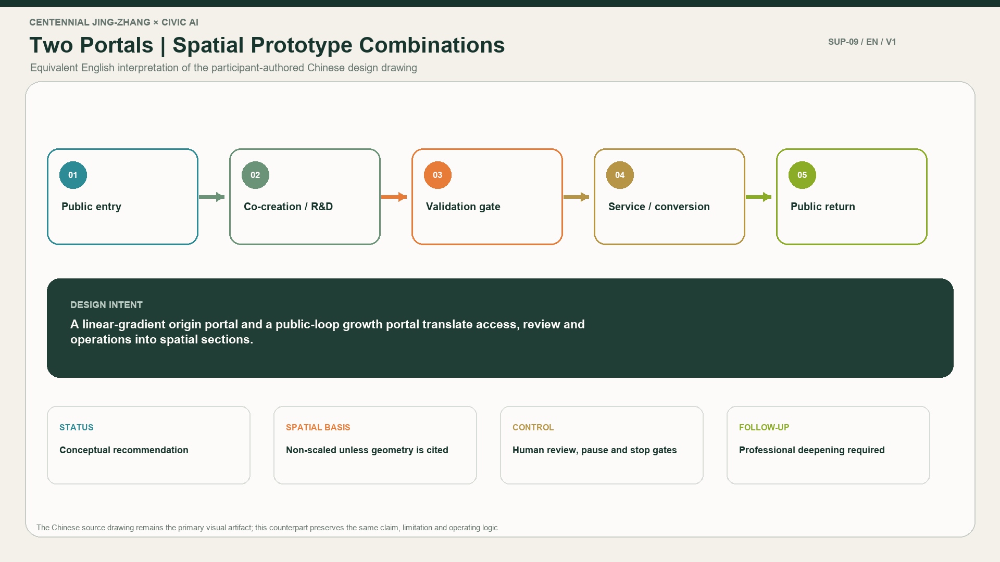
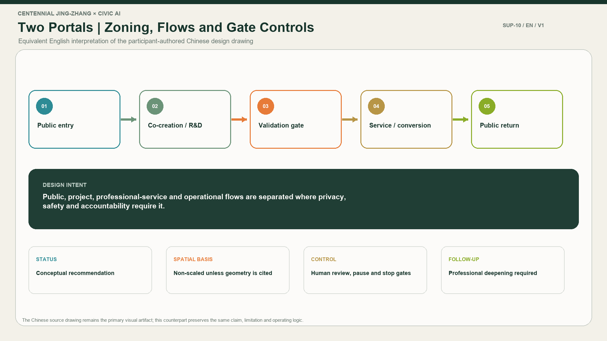
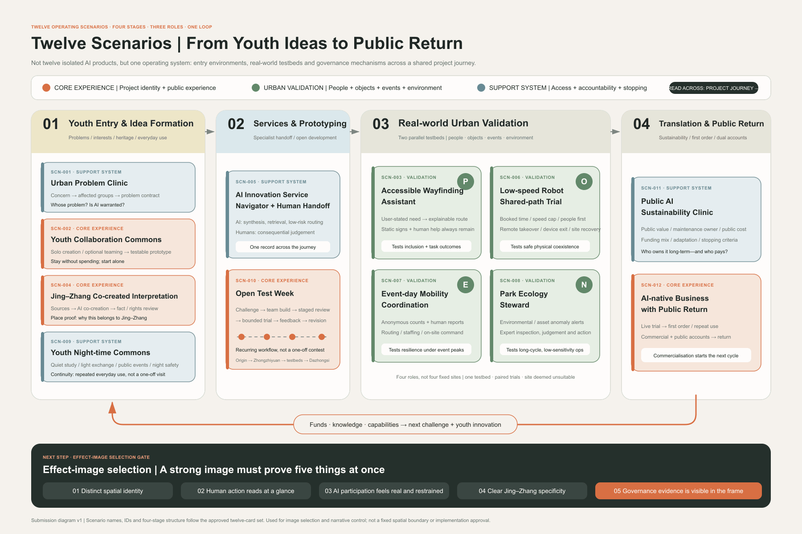
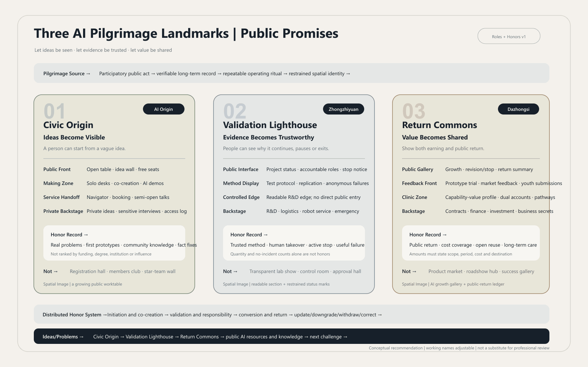
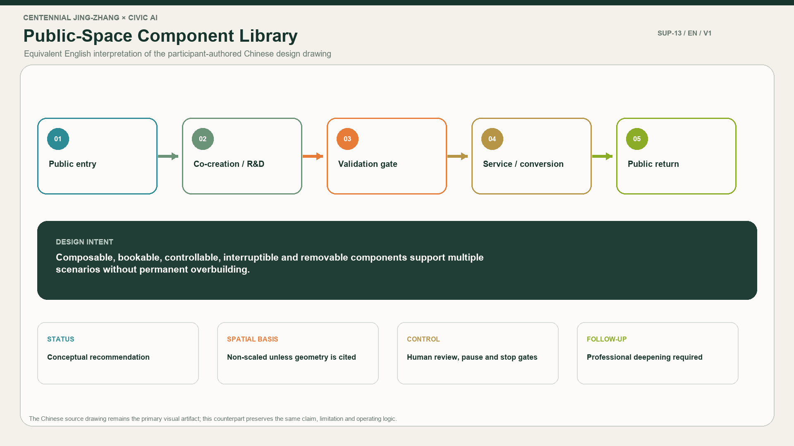
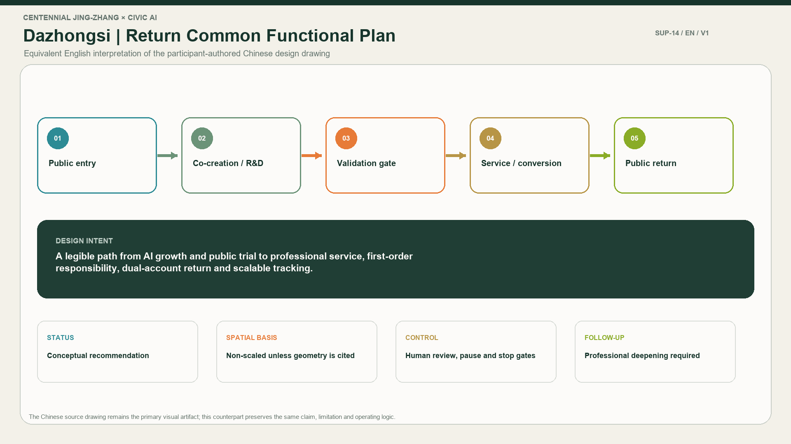